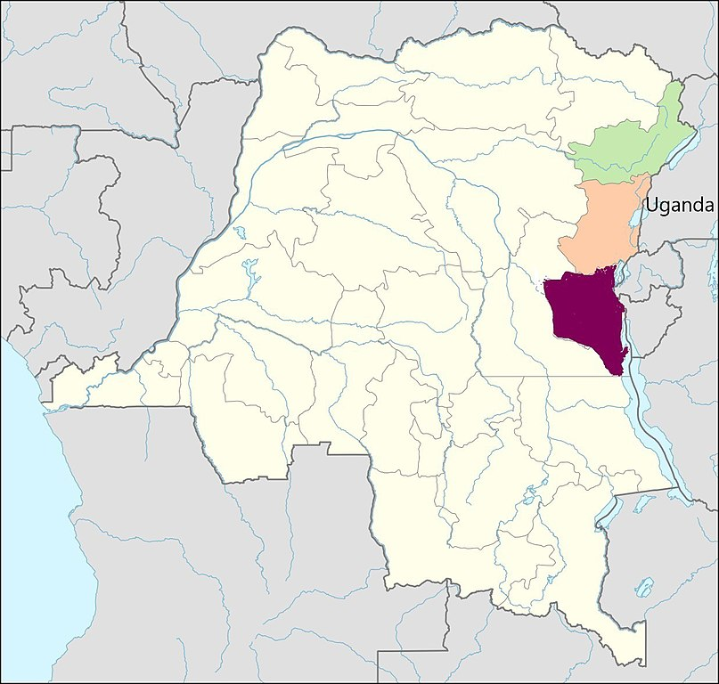
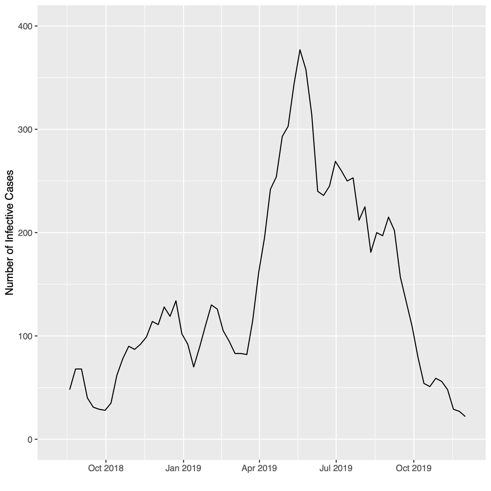
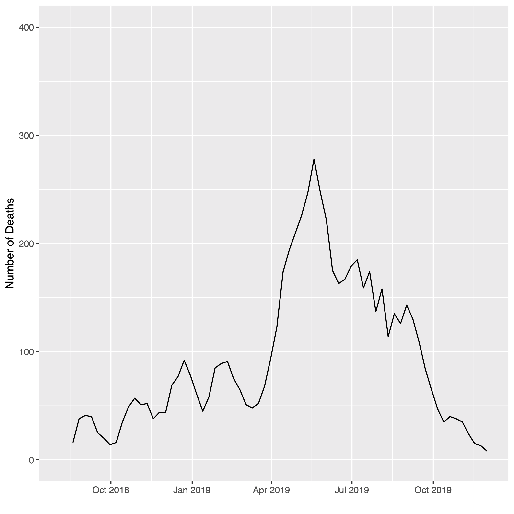

# Ebola Transmissibility in the 2018–19 Kivu Ebola Epidemic James P. Howard, II <<james.howard@jhu.edu>><br/> 2020 Joint Statistical Meetings—Coronavirus Edition
<figure class="featured right"> <img src="img/ebola-virus.jpg" /> <figcaption>Transmission electron microscope of the Ebolavirus particle (Cynthia Goldsmith/CDC)</figcaption> </figure> ## Ebola Background * Viral hemorrhagic fever * Transmission via bodily fluids * Mortality rate of approx. 50% * Limited to primates, including humans * Five known strains of the virus * First case believed from wild animal * First identified in 1976 in Sudan * Periodic outbreaks in Africa since * 2014 spread to U.S. and Europe
<figure class="featured left">  <figcaption>Congolese provinces affected by the epidemic (NordNordWest, DaB./Wikimedia Commons)</figcaption> </figure> ## 2018–19 Kivu Ebola Epidemic * Started August 1, 2018 * Currently active * Spread across eastern DRC * Ituri (green, top) * North Kivu (orange, middle) * South Kivu (dark red, bottom) * As of November 30, 2019: * 3195 confirmed cases * 2205 dead * Another 4 cases in Uganda
<div class="featured right"> #### Model equations `$$\begin{aligned} \frac{dS}{dt} & = -\frac{\beta IS}{N} \\ \frac{dI}{dt} & = \frac{\beta IS}{N} - \gamma I \\ \frac{dR}{dt} & = \gamma I \end{aligned} $$` #### After Estimation `$$ R_0 = \frac{\beta}{\gamma} $$` </div> ## The SIR Model <div> * Standard epidemiological model * Multicompartment mode * Catenary model of progression * Cell descriptions * S: susceptible, base pool of persons * I: infective, those who can transmit * R: removed, through recovery or death </div> <figure> </figure>
<figure class="featured right"> </figure> ## Model Estimation * Software used * Pyomo 5.6.6—optimization * Ipopt 3.13.0—solver * R 3.6.1—data preprocessing * Modified SI model provided by Hart, et al. * Adds R compartment * Pyomo available upon request * Assumptions * 10,000,000 initial susceptible pool * Expected infectious period of 21 days * Not infectious until symptomatic
<figure class="featured right">  </figure> ## Data Acquisition and Preparation * Data from Humanitarian Data Exchange * Daily case count from August 3, 2018 * Data through November 28, 2019 * Aggregated from DRC MOH reports * Data Preparation * Aggregated to weekly case counts * Established running sums weekly cases * 3-week run period * Weekly counts for the I compartment * Plot of I compartment by week at right
<figure class="featured right">  </figure> ## Discussion and Conclusions * Estimated `$$ 𝑅_0=2.017148$$` * Prior estimates range from 1.5 to 2.5 * Landed right in the middle * Future Directions * Expanding to SEIR model (exposed) * Re-estimates based on new data * Meta-analysis of all estimates
<figure class="featured right"> <figcaption>Ebola treatment in the Democratic Republic of the Congo (WHO)</figcaption> </figure> <div style="width: 50%; font-size: 1rem;"> ## References * Althaus, C. L. (2014). Estimating the reproduction number of Ebola virus (EBOV) during the 2014 outbreak in West Africa. _PLoS Currents_, 6. * Godfrey, K. (1983). _Compartmental models and their application_. New York: Academic Press. * Hart, W. E., Laird, C. D., Watson, J. P., Woodruff, D. L., Hackebeil, G. A., Nicholson, B. L., & Siirola, J. D. (2017). _Pyomo-optimization modeling in Python_ (2nd ed.) (Vol. 67). Berlin: Springer. * Kermack, W. O., & McKendrick, A. G. (1927). A contribution to the mathematical theory of epidemics. _Proceedings of the Royal Society of London. Series A, Containing papers of a mathematical and physical character_, 115(772), 700-721. * Wächter, A., & Biegler, L. T. (2006). On the implementation of an interior-point filter line-search algorithm for large-scale nonlinear programming. _Mathematical Programming_, 106(1), 25-57. </div>